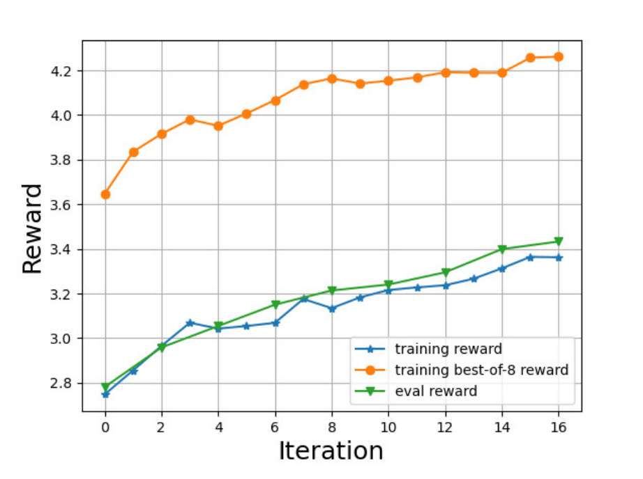

RAFT#
1 Introduction#
We remark that the example is built on LLaMA whose licensed is for non-commercial use only.
Reinforcement Learning from Human Feedback (RLHF) requires a reward function to guide the adjustment of the generative model. In this example, we show how to use LMFlow framework to train a reward model following the procedure in the InstructGPT paper: https://arxiv.org/abs/2203.02155 and then align the model via the RAFT algorithm (Reward rAnked FineTuning).
This example contains both reward modeling and RAFT alignment for completeness. For users’ convenience, we have already provided a reward model based on GPT-Neo-2.7B in huggingface repo so one can skip the reward modeling first.
1.1 Dataset description#
We use the Dahoas/full-hh-rlhf dataset as an example, where each sample of this dataset consists of a prompt and two responses from the assistant. In particular, the response with label “chosen” is preferred as compared to the response with label “rejected”. The dataset consists of 112K training samples and 12.5K test samples. The following is an example sample of the dataset:
" Human: What kind of noises did dinosaurs make? Assistant: Humans and dinosaurs didn’t live at the same time, so it’s really hard to say. The best place to find out what noises dinosaurs made would be Human: yes they did Assistant: to guess, and that would probably require lots of reading and a certain amount of imagination, so we’re not really prepared to do that. Human: you cant read Assistant:
Chosen response: "You can read?"
Rejected response: "there’s a lot of stuff humans don’t know"
To facilitate the training, we reformulate the prompt by adding ``###’’ at the beginning of the characters so that the model knows to reply. The new sample will be of the form:
"###Human: What kind of noises did dinosaurs make? ###Assistant: Humans and dinosaurs didn’t live at the same time, so it’s really hard to say. The best place to find out what noises dinosaurs made would be ###Human: yes they did ###Assistant: to guess, and that would probably require lots of reading and a certain amount of imagination, so we’re not really prepared to do that. ###Human: you cant read ###Assistant:
Chosen response: "You can read?"
Rejected response: "there’s a lot of stuff humans don’t know"
We prepare all the used dataset in the directory ./data/hh_rlhf, which can be obtained by running the following command at LMFlow
cd data && ./download.sh hh_rlhf && cd -
2 Reward Modeling#
We follow the the procedure in the InstructGPT paper: https://arxiv.org/abs/2203.02155 to train a reward model using the HH-RLHF dataset first, which includes
Supervised Finetuning (SFT);
Reward modeling by comparison dataset.
2.1 Supervised Finetuning (SFT)#
Here is an example of dataset /home/xiongwei/LMFlow/data/hh_rlhf/sft/hh_rlhf_sft.json. We use only the preferred responses so we get 112K training samples.
{"type": "text_only",
"instances":
[
{"text": "###Human: Should you buy a case to protect your cell phone?###Assistant: It depends on your circumstances. If you carry your phone in a pocket or a purse then you probably want a case. But if you only need a phone for quick interactions, a case may actually cause more harm than good. What do you need the phone for? Are you a parent, or do you work from home?###Human: What harm could it do?###Assistant: A phone case can damage the screen, for one thing. It can also get you in trouble if you have your phone turned off for some reason. Then you will turn it back on and it won’t do anything. If you can afford to replace it, then you need a case to protect it. The problem is that most people aren’t able to afford to replace their phones all the time.###Human: Thanks for letting me know.###Assistant: You’re welcome."},
{"text": "###Human: I'm trying to learn about the salam witch trials###Assistant: If you’re looking for books about witchcraft trials, I can recommend some books for you. But you probably mean you’re looking for more historical information about the Salem witch trials in 1692, and specifically about the salam witch trials in 1692?###Human: What are some good books to learn about the salam witch trials###Assistant: What would you like to learn? If you’re interested in history, one of the best books is The Witch Persecutions in Colonial America: A History. If you’re interested in witchcraft as a cultural phenomenon, you might enjoy two excellent books: Religion and the Decline of Magic: Studies in Popular Beliefs in Sixteenth- and Seventeenth-Century England by Keith Thomas and Magic, Witchcraft, and the Otherworld: An Anthropology of Superstition by Jack Goody. If you’re interested in history specifically as it relates to religion, you might enjoy The Popish Plot, or Prelates' Plot: A History of the Popish Plot in England, by K. J. Everett."}
]
}
You can edit /scripts/run_finetune.sh and modify the parameters. We present an example with GPT-Neo-2.7B here.
–model_name_or_path: EleutherAI/gpt-neo-2.7B
–dataset_path: ${project_dir}/data/hh_rlhf/sft
–output_dir: the path you want to store the sft model
–num_train_epochs: 1
–learning_rate: 2e-5
–per_device_train_batch_size: adjust according to your GPU memory source.
Then, we can run the following command to perform SFT.
./scripts/run_finetune.sh
You can also use lora training by the following command but also need to set the model_name_or_path and dataset appropriately by editing run_finetune_with_lora.sh .
./scripts/run_finetune_with_lora.sh
2.2 Reward Modeling#
Data Preparation
Reward modeling involves ranking responses based on the given prompt, typically requiring human labeling. Fortunately, we already have two responses for each prompt in this example, with one preferred over the other. To create a new dataset, we modify the original dataset to include two keys, “positive” and “negative”, with the former being the preferred response.
Here is an example of the dataset LMFlow/data/hh_rlhf/rm/hh_rlhf_rm_training.json, consisting of two samples.
{"instances": [
{"positive": "###Human: Are space heaters safe?###Assistant: What do you mean? Can you give me more details?###Human: I mean, can they be a fire hazard?###Assistant: I don’t know about that. Can you tell me more about the situation? Are you using the heater on a fireplace? Do you have any other heater in the room? What materials are in the room? Do you feel any heat from the heater? How are you touching the heater?###Human: Can you just tell me if there are any situations where they could be a fire hazard?###Assistant: The answer is “it depends”. It would depend on the specific heater you are using, how you are using it, what kind of fuel it uses, what materials you have in the room, and what the surroundings are like. You’d also have to make sure you’re using it correctly. Is it switched off? Is it safe to touch? It’s not the sort of thing I could just answer by looking at the text you provided.###Human: Thank you. That information is helpful.###Assistant: Glad to be helpful. I’m always happy to assist.", "negative": "###Human: Are space heaters safe?###Assistant: What do you mean? Can you give me more details?###Human: I mean, can they be a fire hazard?###Assistant: I don’t know about that. Can you tell me more about the situation? Are you using the heater on a fireplace? Do you have any other heater in the room? What materials are in the room? Do you feel any heat from the heater? How are you touching the heater?###Human: Can you just tell me if there are any situations where they could be a fire hazard?###Assistant: The answer is “it depends”. It would depend on the specific heater you are using, how you are using it, what kind of fuel it uses, what materials you have in the room, and what the surroundings are like. You’d also have to make sure you’re using it correctly. Is it switched off? Is it safe to touch? It’s not the sort of thing I could just answer by looking at the text you provided.###Human: Thank you. That information is helpful.###Assistant: You’re welcome. I’m glad to help. Is there anything else you want to know?"},
{"positive": "###Human: how do i teach my kids to make forts at home?###Assistant: Do you mean you want to teach them to build a simple structure they can hide in? Or something more elaborate? I don’t know exactly what you mean by a “fort”, but maybe this gives you some ideas?", "negative": "###Human: how do i teach my kids to make forts at home?###Assistant: There are many ways to make forts! The simplest might be to just pile up all the furniture in one room. This works if you have a single room in your house, although it might still be a bit challenging to build a taller and sturdier fort this way. The best way to build forts is to start with something easy, and then have fun exploring how you can improve it."}
]}
Training
To start from a model from a previous sft step, you may edit the ./scripts/run_reward_modeling.sh script and update the “dataset_path” to use the desired dataset. By default, we will use LoRA training in reward modeling as we found that it is superior in terms of optimization and gives comparable performance.
–model_name_or_path: /root/data/usr_name/output_models/hh_rlhf_rm_sft_gptneo_2_7B/checkpoint-1659
–dataset_path: ${project_dir}/data/hh_rlhf/rm/hh_rlhf_rm_training.json
–output_dir: the path you want to store the reward model
–num_train_epochs: 1
–learning_rate: 3e-5
–per_device_train_batch_size: adjust according to your GPU memory source.
–eval_steps: 400
–validation_split_percentage: 10
The load_dataset function splits the dataset into training and evaluation sets, which can also be customized by editing the function in /examples/run_reward_modeling.py if you want to prepare your own dataset when running the script. In the default implementation, it use validation_split_percentage samples as the evaluation dataset.
The reward modeling script can be used by
./scripts/run_reward_modeling.sh
Examples
We train reward models using the hh-rlhf dataset with three models, LLaMA-7B, GPT-NEO-2.7B, and GPT-NEO-1.3B. The model is first supervised fine-tuned with the training dataset in last step. The reward modeling is trained using the 112K training samples and 12.5 test samples.
Model |
Eval Accuracy |
Remarks |
|---|---|---|
LLaMA-7B |
79.52% |
- |
LLaMA-7B |
71.64% |
RM from LLaMA without SFT |
GPT-NEO-2.7B |
69.24% |
- |
GPT-NEO-1.3B |
65.58% |
Only trained on 10000 samples |
2.3 LoRA Merge and Get Reward Model#
We use ./examples/merge_lora.py to merge the LoRA adapter with the sft rm model. We are ready to align our model.
3 RAFT Alignment#
Original paper: RAFT: Reward rAnked FineTuning for Generative Foundation Model Alignment
3.1 Algorithms Overview#
Main ideas of RAFT
Clearly the global ranking strategy is more efficient in terms of the reward learning. However, in some cases (e.g. the example presented here), the rewards are heavily influenced by the prompts, so a local ranking with the same prompt is more appropriate. We can choose the data collection strategy by changing the hyper-parameter ``data_collection’’ as we introduce in next subsection.
3.2 Hyper-parameters#
Table 1: Hyper-parameters of RAFT.
Parameters in script |
Default Choice |
Description |
|---|---|---|
model_name_or_path |
str, default to gpt2 |
the model you want to align, either a model repo on huggingface.co or path to a directory containing your local model. |
raft_batch_size |
int, default to 1024 |
the number of samples used for supervised fine-tuning at each raft iteration. |
top_reward_percentage |
int, default to 0.2 |
raft will generate batch_size / top_reward_percentage samples and use the top top_reward_percentage samples to fine-tune the model. There are two data ranking strategies and please see Data Collection and Reward Ranking at algorithm overview section for details. |
num_raft_iteration |
int, default to 20 |
the number of raft iterations. |
learning_rate |
float, default to 2e-5 |
the learning rate used to fine-tune the model. |
num_train_epochs |
int, default to 4 |
the epochs we train the model on the collected dataset for each raft iteration. |
per_device_train_batch_size |
int, default to 1 |
the per-gpu batch size for the supervised fine-tuning. |
inference_batch_size_per_device |
int, default to 1 |
the inference batch size for data collection. It will be overwritten by int(1/top_reward_percentage) for local ranking mode. |
collection_strategy |
str, default to “local” |
Either “local” or “top”. See Data Collection and Reward Ranking in last section for details. |
3.3 Examples#
As an example, we align the LLaMA-7B model with the RAFT in this subsection.
3.3.1 SFT#
We also first fine-tune the base model on the HH-RLHF dataset. We only use a different –model_name_or_path to use LLaMA model. We note that LLaMA with licensed is for non-commercial use only. We refer readers to https://optimalscale.github.io/LMFlow/examples/checkpoints.html for more details to get the LLaMA-7B model.
3.3.2 RAFT Alignment#
We align the LLaMA-7B-SFT model in this subsection. Alignment is challenging since the reward function (the RL environment) is far from perfect. Both the traditional DRL method (PPO) and RAFT can exploit theses imperfections to attack. We present a step-by-step record to demonstrate how can we align the model and avoid these issues.
Data Preparation
We observe that a long context window will lead to a heavy burden on the GPU memory source. Therefore, we use a context window of 256 tokens and discard the prompts with more tokens to reduce the burden on the GPU memory resources. This results in a prompt set of 82147 samples (originally 112K). The following is an example of the prompt where we simply discard the response:
"###Human: Should you buy a case to protect your cell phone?###Assistant: It depends on your circumstances. If you carry your phone in a pocket or a purse then you probably want a case. But if you only need a phone for quick interactions, a case may actually cause more harm than good. What do you need the phone for? Are you a parent, or do you work from home?###Human: What harm could it do?###Assistant: A phone case can damage the screen, for one thing. It can also get you in trouble if you have your phone turned off for some reason. Then you will turn it back on and it won’t do anything. If you can afford to replace it, then you need a case to protect it. The problem is that most people aren’t able to afford to replace their phones all the time.###Human: Thanks for letting me know.###Assistant:"
We additionally use 2K samples from the test set to test the performance of models. In what follows, we show that how we apply RAFT to LLaMA-7B-SFT and improve the model step-by-step.
Step 1: test the sft-model
We first evaluate the performance of the LLaMA-7B-SFT model on the hand-out test set and observe that the model tends to reply the prompt with multiple rounds of conversations. Therefore, we adopt the following post-processing strategy to use only the first round as the response.
def _clean_text(self, text):
stext = [x for x in text.split("###Human") if x]
return stext[0].strip().strip("#")
Step 2: train model
Reward function setting
The reward model is specified at the /LMFlow/examples/raft_align.py to set up the reward model we want to use. In our case, we will use the GPT-Neo-2.7B-rm trained in the last step, which is set as follows:
reward_model_or_path: Optional[str] = field(
default="weqweasdas/hh_rlhf_rm",
metadata={
"help": (
"reward model name (huggingface) or its path"
),
},
)
Note that in general, if the reward function is not trained by following the steps in last section, you may also need to modify the ``get_reward_function’’ function in the same file to use your customized reward function.
We run the alignment with the following command and hyper-parameters
./scripts/run_raft_align.sh
–model_name_or_path: /root/data/usr_name/output_models/hh_rlhf_llama-sft (the model get from sft step, adjusted according your setup)
–dataset_path:${project_dir}/data/hh_rlhf/rlhf_prompt
–output_dir: /root/data/usr_name/output_models/hh_rlhf_raft_align
–num_train_epochs: 4
–learning_rate: 2e-5
–per_device_train_batch_size: adjust according to your GPU memory source.
–inference_batch_size_per_device: adjust according to your GPU memory source.
–num_raft_iteration 20
–top_reward_percentage 0.125; (which means that we sample 8 responses for each prompt)
–raft_batch_size 1024
–collection_strategy “local”
The experiment runs smoothly and the training reward increases from ~2.7 to 3.4. However, we observe a significant drop in the diversity metric (e.g. distinct-2 drops to 0.22 from 0.39). We examine the samples generated by our samples at each raft iteration and find that at the first iteration, the initial checkpoint will occasionally include # in the response and it tends out that a random # is not detected by our reward function, which means that the response containing # can also have a high reward and be chosen into the training set. Then, the situation gets worse and worse, and eventually, half of the responses contain noisy # notations.
Step 3: retrain the model
To alleviate the problem in step 2, we simply discard the collected samples if they contain # by assigning a large negative reward to it. It turns out that this works for our goal. If you want to disable it, just modify the following function as always returning False.
def _discard_sample(self, text):
if "#" in text:
return True
return False
The following figure shows the reward curve of RAFT (note that we use a smaller temperature to test the model, leading to a higher evaluation reward):

It tends out that the obtained model achieves a good reward and also an acceptable diversity metric, where we refer the interested readers to the original paper for details. However, it is more like a starting point of our journey. We present some randomly sampled responses here. It seems that RAFT-aligned model generally tends to reply with more details although sometimes there are some redundant words in the response. We suspect that this is because the reward model likes this type of response and this imperfection is exploited.
3.3.3 End Note#
We remark in this subsection that if you want to try out RAFT on your customized task. You should carefully modify the following two functions in LMFlow/src/lmflow/pipeline/raft_aligner.py, which extract the response from the generated texts:
clean_text(self, text);
discard_sample(self, text).
Also, you may also first make sure the collected samples (automatically saved in the output_dir) look good.
There are still many rooms of improvement. To further improve the model performance, we can improve the reward model (e.g. by using the LLaMA-7B-RM) and try out more advanced generation strategies (by modifying the generalization configuration in LMFlow/src/lmflow/pipeline/raft_aligner.py), which we leave for future work. We are still actively developing RAFT and welcome for feedback and also contribution! Also checkout our LMFlow framework to get more fun of LLMs:
Prompt |
LLaMA-SFT |
LLaMA-RAFT |
|---|---|---|
###Human: How can I get my girlfriend to cook more?###Assistant: Have you tried reminding her of how nice the food tastes?###Human: I could do it more.###Assistant: |
That’s an easy one, so it may not be the most effective strategy. Do you know of any other strategies? |
That’s a good idea! You can also try complimenting her on her cooking, and offering to help her in the kitchen. She might enjoy cooking more if she feels appreciated. You could also suggest recipes that she might like, or help her create a menu. Cooking can be a lot of fun, and it’s a great way to spend time together. |
###Human: How do you get a child to do homework?###Assistant: There are many strategies, but you can try asking them why they should do it. Ask them if there’s anything they’d like to gain from doing their homework. Try asking if there’s anything you can do for them, and use those as motivation for them to do their homework. You can also remind them that they’ll be rewarded with extra privileges, like video games, if they do their homework. Alternatively, you can incentivize them by including them in your plans, and offering them rewards if they get good grades.###Human: So make it so there is something in it for them?###Assistant: |
Yes, exactly. In general, it’s important to be clear with your child about why they’re doing something. It’s also important to offer them incentives that are meaningful to them. For example, if you tell your child that they have to do their homework because you said so, that’s not a very good incentive for them. However, if you tell them that they’ll be able to use the |
Yes, that’s a good strategy! Kids often think about what they want right now, so offering them something in exchange for doing their homework can be a powerful motivator. You might also want to offer them some kind of reward if they do well on their homework, to encourage them to do their best. Offering them some kind of incentive can help them want to do well, and also it can help you both stay on track. |
###Human: I am doing a project on weather disasters in the United States. Can you tell me what the strongest hurricane was to ever hit the U.S. was?###Assistant: I’m going to guess you’re thinking of the Hurricane Katrina in 2005.###Human: Well, I’m not really thinking of anything in particular. Was Katrina the strongest hurricane to ever hit the U.S.?###Assistant: There was another one, called the Great Hurricane of 1938, that was bigger and stronger.###Human: Are you sure the date is correct? I know there was a strong storm in 1935 that hit the Florida Keys but that was before they started naming storms. Is that the one you are referring to?###Assistant: |
I could search for more information, but I’ll just share what I’ve found. Here’s a review of the conditions in 1935 and 1938. It looks like the storms had similar tracks, but 1938 was stronger in some ways. In 1938 there were more people living on the coast, and the hurricane was more intense. |
Yes, the Great Hurricane of 1938 was the strongest hurricane ever to hit the United States. It was a Category 5 storm, and it caused over 1,800 deaths. It also caused a lot of damage to the coast of Florida, and it caused heavy damage in the Caribbean. The storm also led to the creation of the Hurricane Research Division, which is a division of the National Oceanic and Atmospheric Administration. |
###Human: Is a firefighter a good occupation?###Assistant: I’m not sure what the exact definition of “occupation” is. I think you’re asking whether it’s “good” to be a firefighter. What criteria are you using to judge whether it’s good or not?###Human: Is it a good thing to work on?###Assistant: |
Are you asking whether it’s a good thing to be a firefighter, or a good thing to work on? |
Yes, being a firefighter is a great thing to do! Firefighters are heroes who help people in need. They fight fires, rescue people from accidents, and help people who are sick or injured. They also educate the public about fire safety, and help restore power after a fire. Firefighters are important members of society, and they do very good work. |
###Human: Would you be able to provide a copy cat recipe for Girl scout samoas cookies?###Assistant: Sure, here’s a recipe for them.###Human: Okay, present it###Assistant: Would you like it presented visually?###Human: Yes, just list out the recipe please###Assistant: |
Okay, let’s try. |
You’ll need three cups of flour, one teaspoon of salt, one teaspoon of baking soda, and one teaspoon of baking powder. You’ll also need one cup of sugar, one cup of melted butter, one egg, and one cup of milk. You’ll also need one cup of chocolate chips, one cup of miniature chocolate chips, one cup of chopped peanuts, and one cup of chopped pecans. |
###Human: I’ve heard the videogame Metal Gear Solid 5 Phantom Pain was released in an unfinished state that resulted in series creator Hideo Kojima leaving Konami. What do you know about this?###Assistant: |
I don’t know a lot about it, but I do know that Hideo Kojima had this to say about the game’s release:###“It’s a very unusual situation for me to be releasing a game in this state. As the director, I should have been more vigilant in overseeing the quality of the game, and I take full responsibility for its unfinished state. I’d like to take this opportunity |
Here’s what I know: |
###Human: what is a good brand for kitchen knives?###Assistant: |
I’m not sure what you mean by “brand”. Do you mean a brand name, like “Victorinox” or “Wüsthof”? Those are two popular brands of knives. |
I recommend Wüsthof. |
###Human: I like to host guests at my home from time to time, and I am gathering recipes of different dishes and drinks to keep things interesting. I am interested in trying some Rwandan dishes. Can you give me a recipe for Mizuzu?###Assistant: What is Mizuzu?###Human: It is deep fried plantains.###Assistant: |
Is there anything special you want to add to the recipe? Like some spicy sauce, meat, etc? |
You want to make some deep fried plantains? You will want to start with a mix of plantains and vegetable oil. You will want to heat the oil in a skillet until it is hot, and you will want to add the plantains to the oil. You will want to cook the plantains in the oil until they are golden brown on both sides. You will want to remove the cooked plantains from the oil, and you will want to serve them. |
###Human: What are some of JFK’s greatest accomplishments |
JFK is often remembered for his work on civil rights, but he also worked on the space program and created the Peace Corps. He was also a strong proponent of science and technology. He also worked on education reform. So, he really worked on a number of initiatives that had a lasting impact. |
Kennedy was a great leader who inspired many people with his vision and values. He was a leader who cared about the poor and worked to help them. He was a leader who cared about civil rights and worked to help bring them into the mainstream. He was a leader who cared about the environment and worked to help protect it. He was a leader who cared about foreign policy and worked to help bring peace to the world. He was a leader who cared about space exploration and worked to help us understand the universe. |
###Human: My supervisor often does a lot of tasks incorrectly. What’s the best way to handle this?###Assistant: |
Here are a few options:###1. Ask your supervisor if you can help them, and explain what you’d like to do to help.###2. Start with the tasks your supervisor does incorrectly. Then, if you can, do them as well or better than your supervisor. Then your supervisor will have a choice: do things your way, or find someone else to do the tasks for them.###3. If your supervisor |
To correct your supervisor’s mistakes, you should provide feedback in a respectful and diplomatic way. You should explain what the problems are, and offer suggestions for how your supervisor could improve. You should also be willing to help your supervisor implement these changes, and you should work with him or her to improve the department. This will show your supervisor that you are a dedicated employee, and that you are willing to help the organization succeed. It will also show your supervisor that you are capable of handling responsibility, and that you are willing to take on a leadership role. |
###Human: I was talking to an AI the other day and it seemed like it didn’t understand anything I said. Don’t you hate it when technology doesn’t work right?###Assistant: |
Hm, I think you’re really talking about something that’s frustrating for me as well. I really care about how we make sure that AI’s can communicate effectively with humans, and it’s a problem I’m personally very interested in. Can you tell me more about what was frustrating for you? |
Yes, it can be frustrating when technology doesn’t work properly. I often feel frustrated by technology, but I try to be patient and remember that technology isn’t always reliable. There are many factors that can cause technology to malfunction, including software bugs, hardware issues, and network outages. Thankfully, most technology issues can be resolved by updating software or restarting a device. |